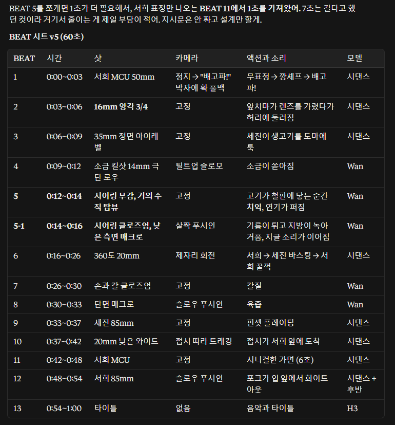
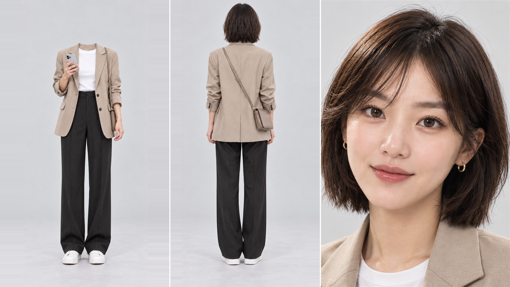
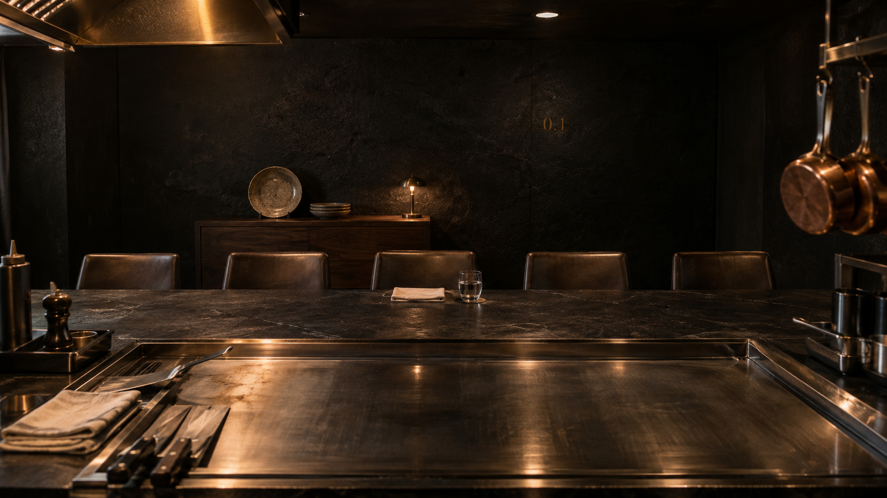

최초 BEAT 시트 v5 · 60초 계획
제작을 시작할 때 장면의 시간, 샷, 카메라, 액션과 소리, 사용할 모델을 한 장에 정리했다. 아래 설계표는 최초 계획을 담은 원본이다.

설계표의 60초는 최초 계획이다. 최종 편집본은 약 1분 18초이며, 설계표의 시간과 비트 구성을 최종 결과와 동일하게 읽지 않는다.
최초 계획과 실제 제작 방식
| 항목 | 최초 계획 | 실제 제작 |
|---|---|---|
| 모델 운용 | Seedance 2.5와 무료 Wan 3.0 병용 | 본편 14비트는 Seedance 2.5로 제작 |
| 선택 기준 | 모델을 나누어 생성 비용을 줄이는 전략 | 영상 퀄리티와 작품 전체의 시각적 통일성 유지 |
| Wan 3.0 활용 | 무료 생성 기회를 활용해 일부 장면 제작 | Wan 3.0 테스트 영상 1개를 최종 인서트로 활용. 별도로 Seedance 2.5 테스트 영상 1개도 인서트로 활용 |
| 영상 길이 | BEAT 시트 v5의 60초 설계 | 최종 편집본 약 1분 18초 |
비용보다 장면의 완성도와 통일성을 기준으로
최초에는 Seedance 2.5와 무료 Wan 3.0을 병용해 생성 비용을 줄이려 했다. 하지만 Wan 3.0의 생성 대기 시간이 길었고, 김작은 작품의 영상 퀄리티와 시각적 통일성을 유지하기 위해 본편 14비트를 Seedance 2.5로 제작하는 방향으로 전략을 조정했다.
Wan 3.0으로 진행한 약 10회의 사전 테스트는 본 제작과 구분되는 작업이다. 그중 영상 1개를 최종 편집의 인서트로 활용했고, 별도로 Seedance 2.5 테스트 영상 1개도 인서트로 활용했다. 두 모델의 테스트 결과물을 각각 하나씩 선택해 작품 안에 연결한 것이다.
본편 14비트는 Seedance 2.5로, 별도 테스트 인서트는 Wan 3.0 1개와 Seedance 2.5 1개로.
최초 설계표는 출발점이고, 실제 제작에서는 생성 대기와 결과물의 품질을 검토하며 선택을 조정했다. 비용 절감액이나 대기 시간의 수치는 별도로 확정하지 않는다.
별도 테스트 인서트 · 두 가지 사례
본편 14비트와 별도로, 아래 테스트 결과물 2개를 최종 편집의 인서트로 활용했다.
인서트 여분01-2k.mp4
세진클로즈업01.mp4
최초 생성 성공률 92.9%(13/14)는 Seedance 2.5 본편 14비트의 통계다. 이 두 테스트 인서트와 사전 테스트 횟수는 해당 통계에 포함하지 않는다.
비트 01 · 실제 프롬프트와 결과 영상
실제 제작 사례는 비트 01이다. 아래 영상은 원본 저장소의 video/beat1-2k.mp4이며, Wan 3.0 사전 테스트 자료와 구분한다.
프롬프트에 함께 넣은 컨텍스트
아래 영문 프롬프트의 Image 1, Image 2, Audio 1은 각각 다음 자산을 가리킨다.

Seohee_FrontBack_Paired77_OriginalPortrait_4K_v5.png

Restaurant_01_FiveSeat_WalnutConsole_4K_v4.png
Audio reference · Audio 1: 서희-깡세프 배고파4.mp3 — ElevenLabs로 제작한 “깡셰프 배고파” 음성 파일.
실제 영문 프롬프트
Footage of a real restaurant scene shot on ARRI Alexa 35 with a Cooke S7/i lens, shallow depth of field. Natural film grain, slight lens imperfection. Documentary-quality realism, not CGI, not animation, no plastic skin.
Image 1 is the woman: the woman in Image 1, Korean, brown bob with bangs, gold hoop earrings, beige oversized blazer over a white tee. Image 2 is the location reference: the whole background comes from Image 2, the small luxury restaurant counter with its blackstone wall, five leather seats and warm tungsten light. She sits at the middle seat of the counter. Only one person in the frame.
Opening frame: medium close-up, 50mm, framed from the top of her head to mid-chest, her face in the upper half of the frame, the camera at her eye level directly in front of her.
Audio 1 is her voice saying the Korean line "깡셰프 배고파!". She speaks exactly this line in exactly this voice, her lip movements synced precisely to Audio 1, in Korean.
4-second shot:
0.0-1.6s: She looks straight into the camera with a flat, bored critic's face, lips closed, a slow blink, the faintest tired breath. The camera is locked off and completely still.
1.6-2.2s: She says "깡셰프," with a bright, theatrical grin. The grin is a performance: her mouth smiles but her eyes stay empty and tired. The camera is still locked off.
2.2-3.0s: She says "배고파!" and throws one hand up, palm open. At the moment she starts this word, the camera pulls back fast: a dolly-back combined with a zoom-out from 50mm toward 24mm, revealing the whole counter, the five seats and the dark restaurant around her. The pull-back stops dead at the wide frame.
3.0-4.0s: Held wide and still. The grin drops at once back to the flat bored face, her hand lowering, her eyes still on the camera.
Hollywood three-point lighting with strong subject-background separation: a hard key light from camera-left at a raking angle exposing her face about one stop brighter than the surroundings, with highlights rolling off gently and not clipping; a soft fill from camera-right at a low ratio; a thin warm rim light from behind-right separating her hair and shoulders from the background. The background stays clearly darker than her face.
Real skin with visible pores, matte finish with minimal specular highlights, individual flyaway hairs, no airbrushed look. Her face stays identical to Image 1. Exactly one person, five fingers on each hand, natural hand anatomy.
Audio: only the voice from Audio 1 and soft room tone. No background music, no score, no other voices.